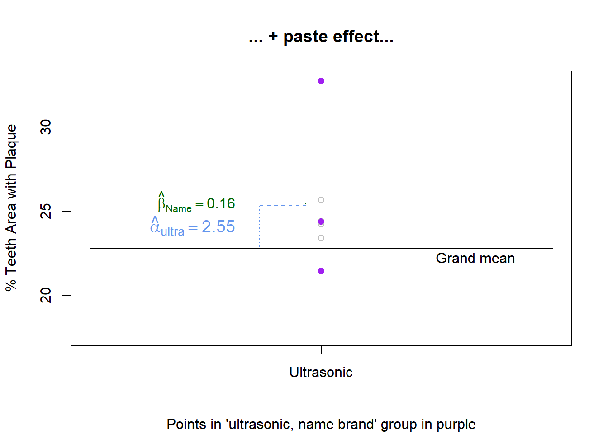
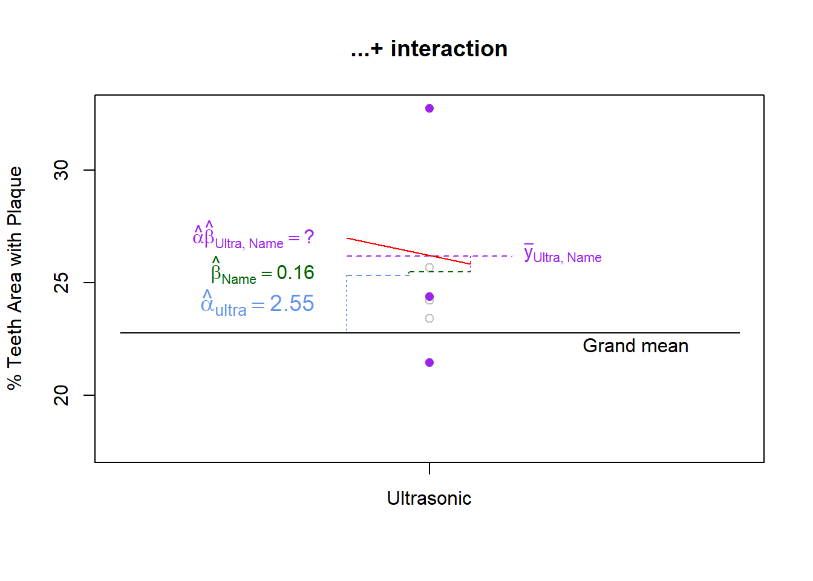

BF[2]
Overview
When researchers want to study the effects of two factors on the same response variable a factorial design can be considered. Factorial experiments involve two or more factors that are crossed.
Full factorial crossing occurs when each combination of factor levels is present in the study.
Compare a factorial design with the one-at-a-time approach. In a one-at-a-time approach, each factor would be investigated in a separate experiment. Each experiment would evaluate the effect of just one factor on the response.
Factorial designs are a way to simultaneously study the effects of multiple factors using just one experiment. Factorial designs have a couple of major advantages over one-factor-at-a-time studies.
- They are a more efficient use of our time and material: I can get information about both of my factors from just one observation
- They allow the random error to be allocated across a greater number of factors, thereby reducing unexplained variance (i.e. mean square error) and increasing the statistical power of the F-test.
- They allow the estimation of interaction effects. Or in other words, we can observe how one factor’s effect on the response changes for different levels of the other factor.
We will expand on the simple toothpaste example to illustrate BF[2] concepts. The study is summarized here.
Researchers wanted to know which of 4 types of toothbrushes was best at reducing plaque: manual (this is the traditional/usual type of brush), oscillating bristles, sonic, and ultrasonic. The response variable is was the percent of teeth surface area covered with plaque. Four teeth (first molar in each quadrant of the mouth) were measured on each person to calculate the total percent area covered. Six subjects were assigned to each type of brush.
Researchers also wanted to study the effect of name brand tooth paste compared to its off brand equivalent. This is the second controlled factor in the experiment. It has two levels (name brand and off brand). Twelve subjects used name brand paste, and a different 12 subjects used the off brand. Toothpaste brand is crossed with toothbrush type to create a BF[2].
Factor Structure
Based on the description above, the factor structure for this experiment is displayed in Figure 1:

There are 3 replicates for each factor level combination of toothbrush and toothpaste brand. Two levels of toothpaste multiplied by 4 levels of toothbrush results in 8 factor level combinations total. These 8 factor level combinations are obtained by overlaying the 2 controlled factor partitions. When the controlled factor brush and paste partitions are overlayed, they cross each other and create new, meaningful partitions. Since there were 24 subjects and the study is balanced, we end up with \(24\div 8 = 3\) replicates in each factor level combination.
Hypothesis and Model
Each factor (i.e. meaningful partition of the data) in Figure 1 corresponds to a term in Equation 1:
\[ y_\text{ijk} = \mu + \alpha_i + \beta_j + (\alpha\beta)_\text{ij} + \epsilon_\text{ijk} \qquad(1)\]
Where
- \(\alpha\) is the effect of toothbrush, and \(i\) goes from 1 to 4 since there are 4 toothbrush types
- \(\beta\) is the effect of toothpaste, and \(j\) is either 1 or 2 since there are 2 levels (Name brand and off brand).
- The \((\alpha\beta)_\text{ij}\) is called the interaction effect.
- \(\epsilon\) is the residual error term, and \(k\) is the replicate count within a factor level combination.
There are at least three hypotheses to test with this model. A hypothesis for each main effect, and a hypothesis for the interaction effect.
A hypothesis for the main effect of toothbrush type:
\[H_0: \alpha_\text{i} = 0 \text{ for all } i\]
\[H_a: \alpha_\text{i} \ne 0 \text{ for some } i\]
A hypothesis for the main effect of toothpaste brand:
\[H_0: \beta_\text{j} = 0 \text{ for all } j\]
\[H_a: \beta_\text{j} \ne 0 \text{ for some } j\]
A hypothesis for the interaction of toothbrush and toothpaste.
\[ H_0: (\alpha\beta)_\text{ij} = 0 \text{ for all } ij \] \[ H_a: (\alpha\beta)_\text{ij} \ne 0 \text{ for some } ij \]
When the interaction term is not significant a predicted value for an observation can be obtained by simply adding the grand mean to the main effects \(\hat{\alpha}_i\) and \(\hat{\beta}_j\). This is equivalent to treating the effect of \((\alpha\beta)_\text{ij} = 0\) for all values of \(i\) and \(j\).
When the interaction effect is significant reject the null hypothesis and accept the alternative hypothesis: at least one factor level combination has a none zero effect.
Assumptions
A two-way ANOVA model may be used to analyze data from a BF[2] design if the following requirements are satisfied. Note that these requirements are identical to the requirements of a BF[1] one-way ANOVA.
The BF[] designation refers to the design of the experiment. The reference to one- or two-way ANOVA refers to the analysis technique applied to the resulting data.
| Requirements | Method for Checking | What You Hope to See |
|---|---|---|
| Constant variance across factor levels | Rule of thumb comparing standard deviations | \(max(s) < 2*min(s)\) |
| Residual vs. Fitted Plot | No major disparity in vertical spread of point groupings | |
| Levene’s Test | Fail to reject \(H_0\) | |
| Normally Distributed Residuals | Normal Q-Q plot | Straight line, majority of points in boundaries |
| Independent residuals | Order plot | No pattern/trend |
| Familiarity with/critical thinking about the experiment | No potential source for bias |
Design
Interaction Effect
The purpose of this section is to define an interaction, introduce interaction graphs, explain how to interpret interaction graphs to detect interactions, and provide helpful hints in working with interactions.
The terms in Equation 1 that represent the marginal effects of the controlled factors in the experiment are referred to as main effects. In this case \(\alpha\) and \(\beta\) are the main effects for toothbrush and toothpaste respectively.
The factor created by crossing toothbrush and toothpaste is called an interaction factor, and its term in the model, \(\alpha \beta\), is called an interaction effect.
Compared to a BF[1], the novel piece of a BF[2] is the interaction factor. This factor allows us to estimate the interaction effect, which is the effect of belonging to a particular factor level combination. Stated another way, the interaction effect is the additional change in the response (positive or negative) when the two factor levels happen together, beyond the effect of each factor level in isolation.
When an interaction is present this means that a factor level’s effect on the response depends on the value of another factor.
We will discuss interactions at a conceptual level before dealing with numbers and the nuts and bolts of calculations. To facilitate this conceptual discussion we will step away from the toothbrush example and use an example for which you have not yet seen any data. We will return to toothbrushes and toothpaste at the end of the conceptual explanation.
Conceptual Understanding
The concept behind an interaction should feel quite familiar. It is something we deal with everyday and is very common in science. You may have experienced an interaction effect in something as simple as your daily commute:
Consider a factor to indicate which route you take to work. Route has two levels: using the main roads and using back roads. The time to reach your destination is the response. During rush hour, the main roads are clogged with traffic and result in a longer commute time than taking the back roads. However, in non-rush hour times, the main roads result in a faster commute time. Thus, the effect of taking main roads depends on whether you are traveling during rush hour or not.
The effect of route was reversed for different levels of rush hour. Not all interactions work this way. Some interactions increase/decrease the magnitude of an effect without completely changing its direction. We can tweak the situation of the commute time example to illustrate this:
During non-rush hour periods, on average back roads result in a commute time that is 5 minutes faster than main roads. During rush hour periods however, the benefit of taking back rounds compared to main roads increases to 15 minutes. Thus, the size of the effect of back roads increased (is amplified) for rush hour compared to non-rush hour.
The above descriptions cover just two possible outcomes for this commute time experiment. It may be helpful to visualize the possible outcome scenarios for this two factor (route and rush hour) study. This can effectively be done with an interaction plot. An interaction plot shows the means for each factor level combination and usually connects the means from the same factor level with a line to help the reader visually group means and detect effects.
Figure 2 shows four possible outcomes of the traffic study where NO interaction is present. The upper left panel of the plot shows a situation where there are no main effects or interactions apparent. The mean is the same regardless of the factor level combination. The upper right panel of the plot shows a large route effect but no effect due to rush hour. This can be seen because the commute time for back roads is high but commute time for main roads is low; however, for a given route there is no difference in the mean for rush hour vs. not rush hour.
The bottom left panel shows a non-zero effect for the rush hour factor, as seen by the sizable difference between the levels of rush hour within a route. However, the flat lines indicate that the mean commute time for route is not changing and therefore route has no effect on commute time. Lastly, the bottom right panel is a situation where both main effects appear to be present - but there is still no interaction apparent.
R code instructions to create interaction plots are at the bottom of the R Instructions>Descriptive Summaries page.

The line segments within each graph of Figure 2 are parallel (or coincide), which is a visual indicator that no interaction is present.
Factors with no interaction will have (nearly) parallel line segments in the interaction plot.
So what does an interaction plot look like when there is an interaction present? The key things to notice is that the line segments in the plot are not parallel. Figure 3 contains 3 examples of interaction plots that show the presence of an potential interaction.

Panel A of Figure 3 illustrates an example where the effect of Route reverses, depending on the value for Rush Hour. In Panel B, the effect of Rush Hour is much greater when using main roads than for back roads. In Panel C, main roads take longer regardless of time of day, but the effect of switching from back roads to main roads is much larger during rush hour than in non-rush hour times.
There are a few key points to remember when working with interactions.
Lastly, exercise caution when interpreting a main effect if an interaction is present. The definition of an interaction is that a factor level’s effect changes for different values of the other factor. Therefore, it does not make sense to interpret the hypothesis test of a controlled factor if it is part of a significant interaction. Instead, get in the habit of describing the nature of the interaction.
To illustrate the danger of interpreting main effect hypothesis tests when the interaction is significant consider Panel A of Figure 3. If the hypothesis test for Route had a large p-value, it is tempting to say there is insufficient evidence that Route has an effect on commute time. However, the interaction plot shows quite the opposite. Route has an important effect on the response, since the level of Route drastically changes the impact of Rush Hour on commute times. Even though the mean commute time for “back” and “main” may be similar in this scenario, Route is indirectly having an effect on commute time through its interaction with Rush Hour.
Conversely, imagine a scenario where Route’s main effect had a small p-value and the Route - Rush Hour interaction was also significant. If the interaction is like that depicted in Panel C of Figure 3, simply stating that Route is a significant factor does not tell the whole story. The effect of Route in during rush hour is large and may be significant (steep blue line), but the effect of Route in non-rush hour times may not be large enough to reach significance (the nearly flat red line).
When a significant interaction is present, do not interpret the hypothesis tests of its main effects without providing additional information.
In the case of a significant interaction, do not interpret its main effect hypothesis tests without providing additional information.
Second, don’t rely on interaction plots alone to detect the presence/absence of interactions. Though interaction plots are a a helpful tool, they do not adequately show the repsonse variability in each factor level combination. In other words, even when line segments are not parallel a hypothesis test is still needed to determine if an interaction is real or just due to random error. Furthermore, two lines may look nearly parallel but could actually represent a significant interaction.
Lastly, beware of a common mistake that students make. Students commonly state an interaction means that the level of one factor affects the values of another factor. This is a lie from Satan! The key misunderstanding here is thinking that the value of one factor affects the other factor. In reality, it is the factor’s effect on the response that changes for different levels of the other factor. The two factors do not affect each other.
Decomposition
So far, we have been discussing the concept of interaction without doing any calculation or using specific numbers. Let’s return to our BF[2] experiment using toothbrush type and toothpaste brand as independent factors, and percent plaque coverage as the response. We will use this data to show how to calculate interaction effects, as well as main effects.
We will then continue on to complete the decomposition of variance and preform an F-test.
As was just mentioned, there are 2 controlled factors: toothbrush type (4 levels) and toothpaste brand (2 levels). A third factor, the interaction, is obtained by crossing the two controlled factors. In terms of the factor diagram, factors are crossed by overlaying the partition lines for the two factors to create new partitions that are also meaningful (see Factor Structure for a review). Figure 4 shows the 3 structural factors for a BF[2].

To get a full structure diagram, as shown in Figure 5 we must also include the universal factors for the grand mean and residuals.
Each factor in the diagram corresponds to a term in Equation 2:
\[ y_\text{ijk} = \mu + \alpha_i + \beta_j + (\alpha\beta)_\text{ij} + \epsilon_\text{ijk} \qquad(2)\]
Where
- \(\alpha\) is the effect of toothbrush, and \(i\) goes from 1 to 4 since there are 4 toothbrush types
- \(\beta\) is the effect of toothpaste, and \(j\) is either 1 or 2 since there are 2 levels (Name brand and off brand).
- The \((\alpha\beta)_\text{ij}\) is called the interaction effect.
- \(\epsilon\) is the residual error term, and \(k\) is the replicate count within a factor level combination.
A decomposition of the data allows is how we estimate these model parameters.
The formulas and decomposition presented here are for balanced data, where the number of replicates at each factor level combination is the same. In the case of unbalanced data with interaction effects, decisions must be made about how to allocate sums of squares. How to deal with this situation, including R code, is explained in the Unbalanced page under Broad Topics.
Factor Effects
How can an interaction affect be estimated? Like all factor effects, its estimate is calculated using the general rule.
Factor level effect = mean of the factor level - Sum(effects of all outside factors)
From the general rule we can see that before we estimate the interaction effect we first need to estimate the outside factor effects (i.e. main effects). Factor level means need to be calculated in order to calculate estimated effects.
It is also important to recall that the grand mean factor is outside of all other factors, while the residual error factor is inside of all other factors.
Factor Level Means
Figure Figure 6 shows our data set with partition lines for structural factors in place. We will now proceed to calculate the factor level means for each factor.

The grand mean is the mean of all the observations:
\[ \hat{\mu} = \bar{y}_\cdots = \frac{19.12 + 18.56 + 25.58 + 24.39 + 24.21 + ... + 23.42}{24} = 22.76 \]
Now find the mean for each level of toothbrush type.
\[ \bar{y}_\text{manual} = \bar{y}_{1\cdot\cdot} = \frac{19.12 + 24.21 + 26.88 + 21.6 + 23.4 + 23.35}{6} = 23.10 \] \[ \bar{y}_\text{oscillating} = \bar{y}_{2\cdot\cdot} = \frac{18.56 + 20.00 + 19.87 + 22.09 + 17.62 + 21.72}{6} = 19.98 \] \[ \bar{y}_\text{sonic} = \bar{y}_{3\cdot\cdot} = \frac{25.58 + 23.31 + 18.99 + 23.09 + 23.81 + 21.27}{6} = 22.68 \] \[ \bar{y}_\text{ultrasonic} = \bar{y}_{4\cdot\cdot} = \frac{24.39 + 21.45 + 32.74 + 24.21 + 25.67 + 23.42}{6} = 25.31 \]
Now find the mean for each level of toothpaste brand.
\[ \bar{y}_\text{name brand} = \bar{y}_{\cdot 1 \cdot} = \frac{19.12 + 18.56 + \cdots + 18.99 + 32.74}{12} = 22.93 \] \[ \bar{y}_\text{off brand} = \bar{y}_{\cdot 2 \cdot} = \frac{21.60 + 22.09 + \cdots + 21.27 + 23.42}{12} = 22.60 \]
There are 8 different combinations of toothbrush type and toothpaste, so the interaction factor has 8 levels total. We calculate a mean for each one, but will only show the calculation for the first 3.
\[ \bar{y}_\text{manual and name brand} = \bar{y}_{11\cdot} = \frac{19.12 + 24.21 + 26.88}{3} = 23.40 \] \[ \bar{y}_\text{manual and off brand} = \bar{y}_{12\cdot} = \frac{21.60 + 23.40 + 23.35}{3} = 22.78 \] \[ \bar{y}_\text{oscillating and name brand} = \bar{y}_{21\cdot} = \frac{18.56 + 20.00 + 19.87}{3} = 19.48 \]
The means for the residual error factor levels is the observed value itself since there is just 1 observation per level. Therefore, there are no calculations to show.
Figure 7 displays all the factor level means inside the factor structure.

Factor level effects
Grand mean effect
Now that we have calculated means for each level of each factor, we can move on to calculate the effects of the factor levels.
For the grand mean, there is only one level and there are no outside factors. Therefore, the effect due to grand mean is 22.76 (equivalent to its mean) and this affect is applied to all 24 observations.
Toothbrush effects
The toothbrush factor has four levels: one for each brush type. We will use the general rule for calculating factor level effects. To calculate the effect of a toothbrush, take the toothbrush mean and subtract it from the grand mean factor’s effect. For the manual brush, this looks like:
\[ 23.09 - 22.76 = 0.33 \]
Using the manual brush has the effect of increasing a person’s plaque area percentage by 0.33 percentage points on average compared to the grand mean. In a similar way1 you can find the effect for the oscillating brush \(19.98 - 22.76 = -2.79\). This means the amount of plaque decreased by 2.79 on average with this brush compared to the grand mean. For a sonic toothbrush, the effect is \(22.68 - 22.76 = -0.09\). For an ultrasonic brush the effect is \(25.31 - 22.76 = 2.55\).
It is interesting to note that the factor effects for brush type are the same, whether toothpaste brand is included in the anlaysis or not.
Toothpaste effects
Calculating the effects for the second controlled factor in the experiment follows a similar pattern and also uses the general rule for calculating effect sizes. Remember that toothbrush is not outside or inside of toothpaste, rather the two factors are crossed. To calculate the effect of using the name brand toothpaste, take the name brand mean and subtract it from the grand mean factor’s effect:
\[ 22.93 - 22.76 = 0.16 \]
A similar calculation is performed for off the brand toothpaste.
\[ 22.60 - 22.76 = -0.16 \]
With only two levels, it becomes obvious that the effects of a factor’s levels will always sum to zero. You may want to go back to the toothbrush level effects and verify this is true.
Interaction effects
The general rule says that effects of outside factors must be subtracted from the factor level mean. We pause to review the relationship of the other factors to the interaction factor to determine if they are inside, outside, or crossed with each other.


In Figure 8 you can see that each level of the interaction will fit nicely within a level of toothbrush, this means toothbrush is outside of interaction (equivalently, interaction is inside of toothbrush). The same holds true for the relationship of toothpaste brand and interaction, as shown in Figure 9.
Therefore, to calculate the interaction effect for using an ultrasonic brush with name brand toothpaste we will subtract the effects of the grand mean factor, ultrasonic brush, and name brand paste from the “ultrasonic, name brand” level mean.
\[ 26.19 - (22.76 + 2.55 + 0.16) = .15 \]
Let’s take a deeper look to understand why this works. It can be helpful to remember our assembly line analogy. We will walk through this assembly line, showing a graph to illustrate how the effects are added at each station.
An observation from the “ultrasonic brush, name brand paste” group starts with the grand mean value of 22.76. The observation belongs to the ultrasonic group, where plaque tends to be higher, specifically 2.55 higher on average (2.55 is the effect of ultrasonic). Figure 10 show the starting point of the grand mean and the addition of the brush effect.

At the next step, because the observation belongs to the Name Brand Toothpaste group we would tack on an additional 0.16 of plaque coverage, as shown in Figure 11.

What we haven’t accounted for yet is the fact that the ultrasonic brush and name brand toothpaste have appeared together. If the interaction is significant then we can expect a synergistic effect (in either direction) and will need to add/subtract more to the response. Otherwise, the interaction effects will be small (relative to the error variance).
There is an old saying, “the whole is greater than the sum of its parts”. In a way, the interaction effect is the measure of how much greater. Figure 12 shows that after summing the effects of each controlled factor (i.e. main effects), the remaining distance to the mean of the factor level combination is the interaction effect.

We calculated this above using the general rule and found the distance to be 0.15.
Instead of 3 separate charts as above, should I use this chart where all 3 are combined into 1 graphic to show the progression?? I spent way too long on this already, so let me know what you would change above these charts. Might as well get them right.
##| label: fig-int-step
#| fig-cap:
#| - "Grand mean + brush effect... "
#| - " + paste effect ... "
#| - " + interaction"
##| fig-subcap:
##| - "Grand mean + brush effect..."
##| - "... + paste effect ..."
##| - " ... + interaction effect"
#### Plot 1
xaxis_limits <- c(3.25, 4.75)
plot(Plaque~brush_num, data=bf1, col = "gray", pch=1, xaxt='n',xlim = xaxis_limits, ylab= "% Teeth Area with Plaque", xlab="", main="Grand mean + brush effect...")
#Replot the points of the ultra, name group in brighter color
points(y = highlight$Plaque, x = highlight$brush_num, pch = 16, col = "purple")
#Add axis labels
axis(1, at=c(1,2,3,4), labels=c("Manual", "Oscillating", "Sonic", "Ultrasonic"))
#Add grand mean line
lines(xaxis_limits, rep(grandmean, 2), lty=1)
text(4.5,grandmean-.5, "Grand mean")
#Puts the dashed group mean line for ultrasonic
#text(4-.4,mu[4,2], expression(bar(y)[ultra]), cex = 1.2)
#Ultrasonic effect line and text
lines(rep(4-.2,2), c(mu[4,2], grandmean), lty=3, col = "cornflowerblue") #vertical line
lines(c(4-.2,4 -.05), rep(mu[4,2],2), lty=2, col = "cornflowerblue") #horizontal line
text(4-.25, mean(c(mu[[4,2]], grandmean)), expression(hat(alpha)[ultra]== 2.55), col = "cornflowerblue",
pos=2, cex = 1.2)
########## Plot 2 ############
xaxis_limits <- c(3.25, 4.75)
plot(Plaque~brush_num, data=bf1, col = "gray", pch=1, xaxt='n',xlim = xaxis_limits, ylab= "% Teeth Area with Plaque", xlab="", main="... + paste effect...",
sub = "Points in 'ultrasonic, name brand' group in purple")
#Replot the points of the ultra, name group in brighter color
points(y = highlight$Plaque, x = highlight$brush_num, pch = 16, col = "purple")
#Add axis labels
axis(1, at=c(1,2,3,4), labels=c("Manual", "Oscillating", "Sonic", "Ultrasonic"))
#Add grand mean line
lines(xaxis_limits, rep(grandmean, 2), lty=1)
text(4.5,grandmean-.5, "Grand mean")
#Puts the dashed group mean line for ultrasonic
#text(4-.4,mu[4,2], expression(bar(y)[ultra]), cex = 1.2)
#Ultrasonic effect line and text
lines(rep(4-.2,2), c(mu[4,2], grandmean), lty=3, col = "cornflowerblue") #vertical line
lines(c(4-.2,4 -.05), rep(mu[4,2],2), lty=2, col = "cornflowerblue") #horizontal line
text(4-.25, mean(c(mu[[4,2]], grandmean)), expression(hat(alpha)[ultra]== 2.55), col = "cornflowerblue",
pos=2, cex = 1.2)
#Name Brand Effect line with text
lines(rep(4 - .05,2), c(mu[4,2] + .16, mu[4,2]), lty=3, col = "darkgreen") #vertical line
lines(c(4 - .05, 4+.1), rep((mu[4,2] + .16),2), lty = 2, col = "darkgreen") #horizontal line
text(4 - 0.25, mu[[4,2]] + 0.16, expression(hat(beta)[Name] == 0.16), col = "darkgreen", pos=2)
########## Plot 3 ############
xaxis_limits <- c(3.25, 4.75)
plot(Plaque~brush_num, data=bf1, col = "gray", pch=1, xaxt='n',xlim = xaxis_limits, ylab= "% Teeth Area with Plaque", xlab="", main="...+ interaction")
#Replot the points of the ultra, name group in brighter color
points(y = highlight$Plaque, x = highlight$brush_num, pch = 16, col = "purple")
#Add axis labels
axis(1, at=c(1,2,3,4), labels=c("Manual", "Oscillating", "Sonic", "Ultrasonic"))
#Add grand mean line
lines(xaxis_limits, rep(grandmean, 2), lty=1)
text(4.5,grandmean-.5, "Grand mean")
#Puts the dashed group mean line for ultrasonic
#text(4-.4,mu[4,2], expression(bar(y)[ultra]), cex = 1.2)
#Ultrasonic effect line and text
lines(rep(4-.2,2), c(mu[4,2], grandmean), lty=3, col = "cornflowerblue") #vertical line
lines(c(4-.2,4 -.05), rep(mu[4,2],2), lty=2, col = "cornflowerblue") #horizontal line
text(4-.25, mean(c(mu[[4,2]], grandmean)), expression(hat(alpha)[ultra]== 2.55), col = "cornflowerblue",
pos=2, cex = 1.2)
#Name Brand Effect line with text
lines(rep(4 - .05,2), c(mu[4,2] + .16, mu[4,2]), lty=3, col = "darkgreen") #vertical line
lines(c(4 - .05, 4+.1), rep((mu[4,2] + .16),2), lty = 2, col = "darkgreen") #horizontal line
text(4 - 0.25, mu[[4,2]] + 0.16, expression(hat(beta)[Name] == 0.16), col = "darkgreen", pos=2)
#Interaction Mean line
lines(c(4 - .2, 4+.2), rep(26.19,2), lty = 2, col = "purple") #bigger horizontal line
lines(rep(4 + .1, 2), c(mu[4,2] + .16, 26.19), lty = 3, col = "purple") #vertical line
text( 4 + .2, 26.19, TeX(r'($\bar{y}_{Ultra,Name}$)'), col = "purple", pos = 4)
#Name Brand Effect line with text
text(4 -.25, 27, TeX(r'($\hat{alpha} \hat{beta}_{Ultra,Name} = ?$)'), col = "purple", pos = 2)
lines(c(4-.2, 4+.1), c(27, 25.83), col = "red")

For each observation, Figure 13 displays all the factor level effects that are summed to obtain that observation.

Degrees of Freedom
We can use our understanding of inside vs. outside factors to determine the degrees of freedom (df) for the grand mean, treatment factors, interaction and residual errors. We start with 24 observations - or pieces of information. In other words, we have 24 degrees of freedom that need to be allocated to the factors.
df\(_\text{factor}\) = Total levels of a factor minus the sum of the df of all outside factors
An alternative way to find degrees of freedom is to count the number of unique pieces of information in a factor.
In the toothbrush and toothpaste example, grand mean has one level and there are no factors outside of grand mean. Therefore, its degrees of freedom equals one. This will always be the case.
Remember, the degrees of freedom represent the number of unique pieces of information contributing to the estimation of the effects for that factor. In this case, as soon as you estimate the grand mean for just one of the observations, you know it for all the observations. In other words, only 1 value was free to vary. As soon as it was known all the other values for the grand mean effect were also known. Therefore, there is just one unique piece of information in the grand mean factor. Grand mean has just 1 degree of freedom.
In this case there are two controlled factors, or treatment factors: toothbrush and toothpaste. For toothbrush there are four levels of the factor. Grand mean is the only factor outside of toothbrush. Take the number of levels for toothbrush (4) and subtract the degrees of freedom for grand mean (1), which yields 4-1 = 3 degrees of freedom.
The degrees of freedom for toothbrush is it the same here as it was for the BF[1].
We could just as easily have used the other approach to finding the degrees of freedom: counting the unique pieces of information. Upon examining the factor for toothbrush in Figure 13 you can see there are 4 unique numbers. We know the effects for toothbrush must sum to zero, so the 4th effect is not free to vary. As soon as I know the effect for 3 of the brushes, I can fill in all the effects for the toothbrush factor.
A similar approach is taken for toothpaste. Here it is even more obvious that the effects for toothpaste sum to zero. After estimating the toothbrush effect for one observation, I can fill in the toothpaste effects for all the other observations. Therefore, the degrees of freedom for toothpaste is 1.
Using the general rule, I know there are 2 levels for toothpaste and grand mean is the only outside factor. Since grand mean has 1 degree of freedom, I get \(2-1 = 1\) degree of freedom for toothpaste.
Now we must calculate degrees of freedom for the interaction term. Take a closer look at the interaction effects in Figure 13. You can see that the numbers repeat within each cell. There are 8 cells total. You can also see that the effects inside a column of values sum to zero, as do the values in a row. Therefore, I really only need to know a value in 3 of the cells of the interaction factor before I can fill in the effects for all the other cells in that factor.
This is in perfect harmony with an application of the general rule. The interaction factor has 8 factor levels. Factors outside of the interaction include: grand mean (1 df), toothbrush (3 df), and toothpaste (1 df). Applying the general rule with these values yeilds \(8 - (1 + 3 + 1) = 3\) degrees of freedom for the interaction factor.
Perhaps the easiest way to find the degrees of freedom for an interaction that is created by crossing two other factors is to multipley the degrees of freedom of the two other factors. In this case, toothbrush and toothpaste are crossed, so you would get \(3*1 = 3\), which matches the answer found using other methods.
Finally, the residual degrees of freedom can be found using the general rule. Since the residual error factor is inside of all other factors, this is the same as finding how many degrees of freedom are leftover after calculating degrees of freedom for all other factors. In this example, there were 24 observations total, so we subtract the degrees of freedom for the other factors from 24. This returns \(24 - (1+3+1+3) = 16\) degrees of freedom for residuals.
The other way to approach finding the degrees of freedom for residuals is to group the residuals by the smallest structural factor partitions (in this case the interaction). Inside each of those partitions the residual sum to zero. For example, applying the interaction partition to residuals gives the values \(-4.28\), \(0.81\), and \(3.48\). Since we now the 3 residuals sum to zero in each partition, we only need to know 2 values per partition in order to fill in the third residual effect. With 8 partitions applied to the residuals, we have \(2x8 = 16\) degrees of freedom for residual error.
Completing the ANOVA Table
Appendix
Notation for Estimated Effects
Converting BF[2] to BF[1]
Unreplicated BF[2]
The time it takes to reach your destination using a busy road PUT A TABLE
Footnotes
The values used in calculations here and throughout this page are rounded for a cleaner display. However, you should use unrounded values for these calculations. Rounded values and significant digits is the reason the arithmetic in some of these calculations appears off by one one-hundredth.↩︎